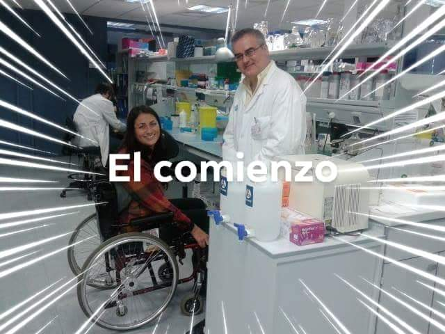

Aunque existen más de 200 tipos, me voy a centrar en la Ataxia de Friedreich ya que es la más frecuente, pero comparten todos los tipos una característica en común:la alteración de la coordinación de movimientos.
La ataxia de friedreich
Esta ataxia hereditaria frecuente comprende lesiones en el cerebelo, la médula espinal y los nervios periféricos. Los nervios periféricos transportan señales desde el cerebro y la médula espinal hacia los músculos. En la mayoría de los casos, los signos y síntomas aparecen bastante antes de los 25 años. La tasa de avance de la enfermedad varía. Por lo general, la primera señal es la dificultad para caminar (ataxia de la marcha). La enfermedad normalmente avanza hacia los brazos y el tronco. Con el tiempo, los músculos se debilitan y se atrofian, lo que causa deformidades, especialmente en los pies, las piernas y las manos. Otros signos y síntomas que pueden manifestarse a medida que avanza la enfermedad son hablar lento y balbuceando (disartria), fatiga, movimientos oculares rápidos e involuntarios (nistagmo), curvatura espinal (escoliosis), pérdida de la audición y enfermedades cardíacas, entre ellas, agrandamiento del corazón (cardiomiopatía) e insuficiencia cardíaca. El tratamiento temprano de los problemas cardíacos puede mejorar la calidad de vida y la supervivencia.STOP-FA
 STOP-FA WEB
STOP-FA WEB
 Surge como la necesidad de movilizar e incrementar los recursos económicos disponibles para financiar proyectos excelentes de investigación científica que vayan en esta dirección Es una asociación sobre la Ataxia de Friedreich en la que hay un médico llamado Antoni Matilla que esta investigando por esta enfermedad para que llegue a su cura.Para finalizar esta investigación lo que hace falta son 10.000.000 de euros los cuale se consiguen con actos benéficos o donaciones.
Los ensallos clínicos con personas serán a finales del 2020-principios 2021. Ahora estan probando con los ratones y va todo bien, lo único necesario para que salga a los pacientes es conseguir al dinero.
PERSONAS DE LA ASOCIACIÓN QUE COLABORAN PARA DARLE FIN AL PROYECTO
MI HISTORIA